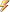

UserInterfaceDropDown Class |
A drop-down list: a box that shows the item chosen, and the list of items that
opens under it when the box is clicked. Choosing an item in the list, with the
mouse or the keyboard, changes SelectedIndex and raises SelectedIndexChanged.
The open list is drawn over every other user interface object, and while it is open it has the mouse to itself: a click on an item chooses it, and a click anywhere else in the view closes the list and goes no further. The mouse wheel scrolls a list longer than MaximumVisibleItems.
Once the drop-down has keyboard focus, Up and Down, Home and End move through the items, Space or Enter opens the list and chooses from it, Escape closes it and a letter goes to the next item that starts with it.
The box shows the selected item, or PlaceholderText when nothing is selected. Text is not used.
SystemObject
Rhino.UIUserInterfaceObjectBase
Rhino.UIUserInterfaceControl
Rhino.UIUserInterfaceDropDown
Rhino.UIUserInterfaceObjectBase
Rhino.UIUserInterfaceControl
Rhino.UIUserInterfaceDropDown
Namespace: Rhino.UI
Assembly: RhinoCommon (in RhinoCommon.dll)
The UserInterfaceDropDown type exposes the following members.
| Name | Description | |
|---|---|---|
| UserInterfaceDropDown | Initializes a new instance of the UserInterfaceDropDown class | |
| UserInterfaceDropDown(IEnumerableString) | Initializes a new instance of the UserInterfaceDropDown class |
| Name | Description | |
|---|---|---|
| BackgroundColor |
Color the control is filled with: the face of a button, the track of a
slider, the box of a check box or radio button, the field of a text box,
the whole rectangle of a label, icon or grid. Color.Empty, the default,
means the control chooses the color for the theme that is in use and
follows the theme when it changes. Labels and icons draw no background when
this is Color.Empty. A grid fills with the theme's panel color when it is a
top level control, and draws no background when it is inside another
control. UserInterfaceGrid.BackgroundOpacity makes the theme color see
through, or turns the background off at 0.
(Inherited from UserInterfaceControl.) | |
| BoundToActiveView | (Inherited from UserInterfaceObjectBase.) | |
| HasKeyboardFocus |
Does this object have keyboard focus? An object with keyboard focus gets
first refusal on what is typed in a viewport; what it does not use carries
on to the command line as usual.
(Inherited from UserInterfaceObjectBase.) | |
| HorizontalAlignment | (Inherited from UserInterfaceControl.) | |
| IsListOpen |
Is the list open? Setting it opens the list in the view the drop-down was last
drawn in, or closes it without changing the selection. Only one list is open at a
time, and a drop-down that has not been added to a document has none to open.
| |
| ItemCount | ||
| Items |
The items in the list, in the order they are shown
| |
| Location | (Inherited from UserInterfaceControl.) | |
| MaximumVisibleItems |
Most items the open list shows at once; a longer list scrolls. The default is 10.
The list also shrinks to what fits in the view.
| |
| PlaceholderText |
Text drawn, dimmed, in the box when nothing is selected
| |
| SelectedIndex |
Index of the item chosen, -1 when nothing is. Setting it does not raise
SelectedIndexChanged; that is only for a choice the user made. An index out of
range selects nothing.
| |
| SelectedItem |
Text of the item chosen, null when nothing is
| |
| Size | (Inherited from UserInterfaceControl.) | |
| Text | (Inherited from UserInterfaceControl.) | |
| TextColor |
Color used to draw the text. Color.Empty, the default, means use the
standard text color for the theme that is in use.
(Inherited from UserInterfaceControl.) | |
| TextHeight |
Height of the text in logical pixels. A value of 0, the default, means
use the standard control font height. Controls that draw no text ignore
this setting.
(Inherited from UserInterfaceControl.) | |
| TextHorizontalAlignment |
Where the text sits inside the control's rectangle. This is not the same
as HorizontalAlignment, which is where the control sits inside its parent.
(Inherited from UserInterfaceControl.) | |
| TextVerticalAlignment |
Where the text sits inside the control's rectangle. This is not the same
as VerticalAlignment, which is where the control sits inside its parent.
(Inherited from UserInterfaceControl.) | |
| Tooltip |
Text shown in a tooltip when the mouse rests over this object. Null or an empty
string means no tooltip, which is what an object starts with. One tooltip is on
screen at a time; whichever object the mouse is over owns it.
(Inherited from UserInterfaceObjectBase.) | |
| TrackingPoint |
3d location that control "sticks" to if not null
(Inherited from UserInterfaceControl.) | |
| VerticalAlignment | (Inherited from UserInterfaceControl.) | |
| Visible |
Is the user interface object visible? Objects that are not visible will
not be drawn and will not receive mouse events
(Inherited from UserInterfaceObjectBase.) |
| Name | Description | |
|---|---|---|
| AddItem |
Adds an item at the end of the list
| |
| ClearItems |
Empties the list, which leaves nothing selected
| |
| ComputedRectangle | (Inherited from UserInterfaceControl.) | |
| Equals | Determines whether the specified object is equal to the current object. (Inherited from Object.) | |
| Finalize | Allows an object to try to free resources and perform other cleanup operations before it is reclaimed by garbage collection. (Inherited from Object.) | |
| GetHashCode | Serves as the default hash function. (Inherited from Object.) | |
| GetType | Gets the Type of the current instance. (Inherited from Object.) | |
| InsertItem |
Puts an item in at index, moving the items from there on along. The same item
stays selected.
| |
| IsMouseOver |
Called to test if the mouse is actively over this object
(Inherited from UserInterfaceObjectBase.) | |
| IsRegistered |
Is this user interface object active
(Inherited from UserInterfaceObjectBase.) | |
| MemberwiseClone | Creates a shallow copy of the current Object. (Inherited from Object.) | |
| OnDraw |
All user interface objects are drawn and can customize their look
with the OnDraw function
(Inherited from UserInterfaceObjectBase.) | |
| OnMouseClick |
Called during a mouse click event on this object
(Inherited from UserInterfaceObjectBase.) | |
| OnMouseDoubleClick |
Called during a mouse double click event on this object
(Inherited from UserInterfaceObjectBase.) | |
| OnMouseDown |
Called when the mouse goes down on this object
(Inherited from UserInterfaceObjectBase.) | |
| OnMouseEnter |
Called when the mouse goes over this object
(Inherited from UserInterfaceObjectBase.) | |
| OnMouseLeave |
Called when the mouse leaves this object
(Inherited from UserInterfaceObjectBase.) | |
| OnMouseMove |
Called when the mouse is moved
(Inherited from UserInterfaceObjectBase.) | |
| OnMouseUp |
Called when the mouse is released on this object
(Inherited from UserInterfaceObjectBase.) | |
| OnRunCommand |
Called after the above RunCommand function is called. This will be
executing while inside of a Rhino command.
(Inherited from UserInterfaceObjectBase.) | |
| OnSelectedIndexChanged |
Called after the user chose a different item, from the list or with the keys.
The default implementation raises the SelectedIndexChanged event.
| |
| RegisterForAllDocuments |
Make this object visible for all documents. Typically you will only have user
interface objects work with single documents. For that case, call
doc.ViewUserInterface.Add
(Inherited from UserInterfaceObjectBase.) | |
| RemoveItemAt |
Takes the item at index out of the list. The same item stays selected; taking
out the selected item leaves nothing selected.
| |
| RunCommand |
Call RunCommand to have the virtual OnRunCommand function executed in the
scope of a Rhino command. If you are modifying the document from one of
the mouse functions on this object, this is the best approach to do so
since changes made inside of a command are recorded for undo.
(Inherited from UserInterfaceObjectBase.) | |
| SetItem |
Changes the text of the item at index
| |
| SetSvg | (Inherited from UserInterfaceControl.) | |
| ToString | Returns a string that represents the current object. (Inherited from Object.) | |
| Unregister |
Unregister this object
(Inherited from UserInterfaceObjectBase.) |
| Name | Description | |
|---|---|---|
 | SelectedIndexChanged |
Raised after the user chose a different item, from the list or with the keys
|